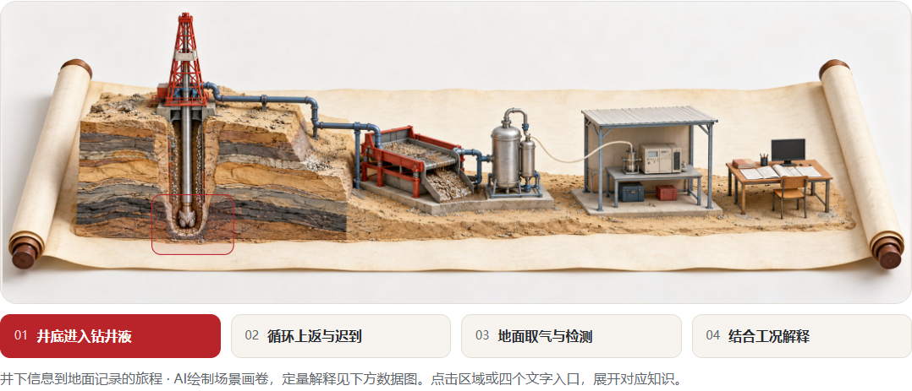
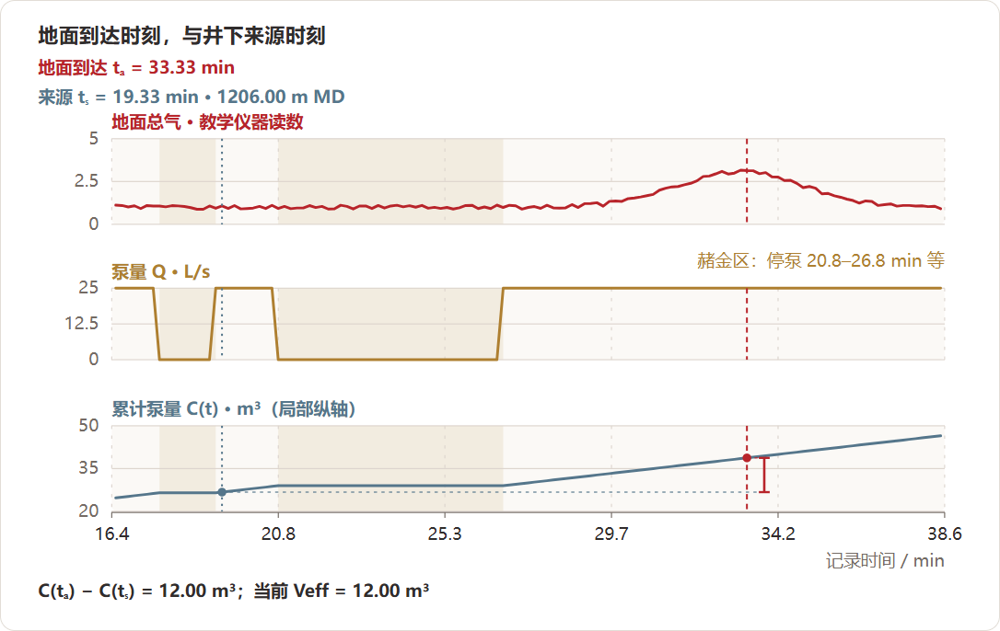
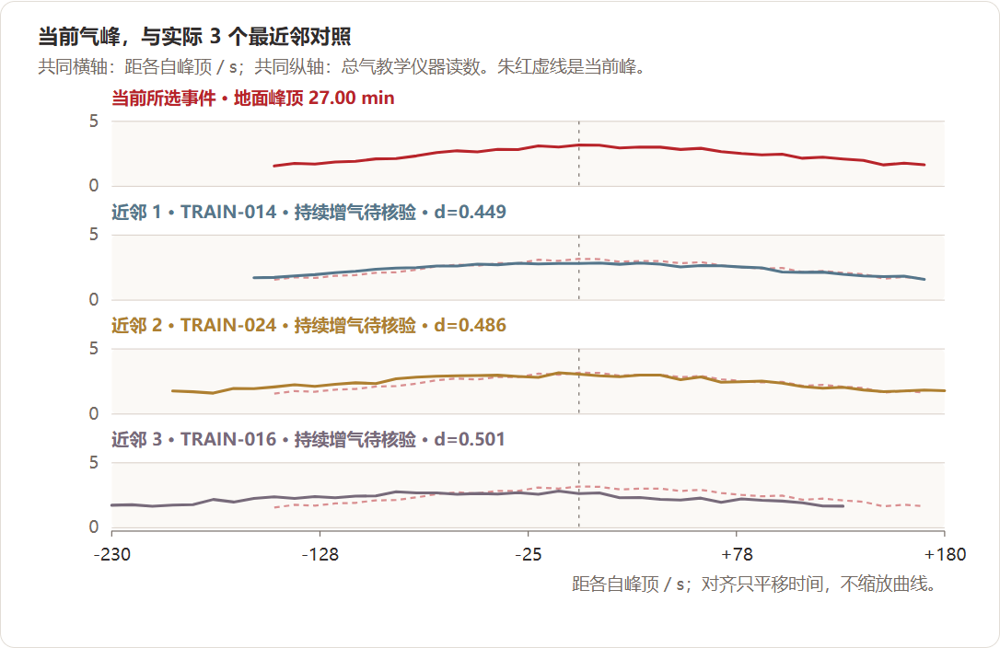
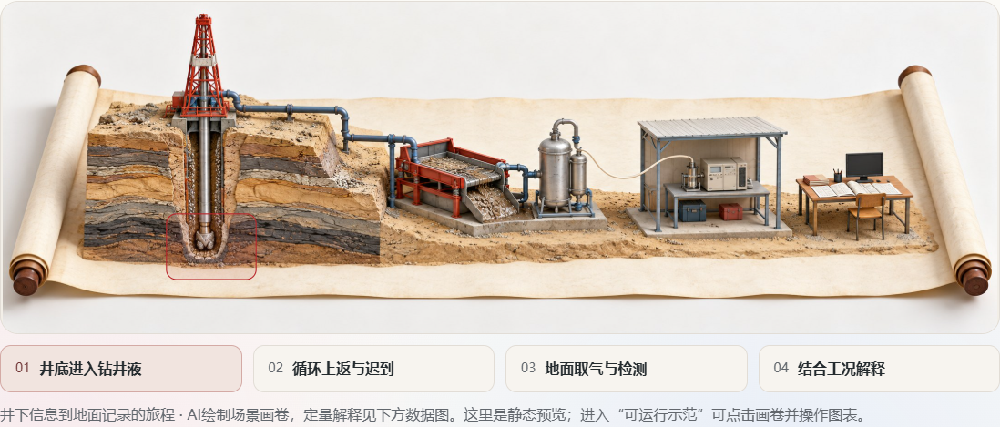
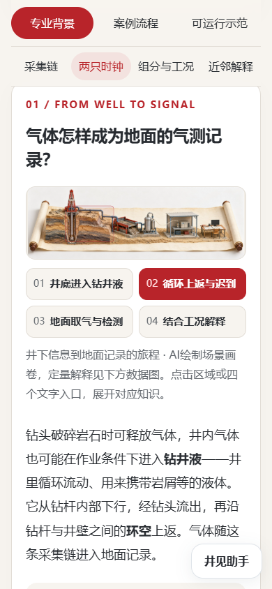

本轮完成了什么
只重做m2的专业背景、案例流程、可运行示范。先写专业知识稿并独立复核，再生成两种纸本微缩井场，选择A作为适中的四章节导航。双时钟、C1—C3组分和实际近邻图承担数据解释，宏观图用于场景定位。朱红、暖白与圆角卡片只用于m2。
同一峰A依次观察、归位、补充工况。体积、迟到、停泵和日志改变后自动计算；接单根、起下钻、持续钻进的互斥条件对照保留逐点相同的气测，实际kNN候选分别为0、1、2，反事实无评价金标。现有引擎与数据生成器保持字节一致。

案例1.7.0 · 门户保持1.9.2-preview · 2026-10-28
打开新版案例 · 下载可导入成品包 · 知识稿 · 完成与未验证范围
只重做m2的专业背景、案例流程、可运行示范。先写专业知识稿并独立复核，再生成两种纸本微缩井场，选择A作为适中的四章节导航。双时钟、C1—C3组分和实际近邻图承担数据解释，宏观图用于场景定位。朱红、暖白与圆角卡片只用于m2。
同一峰A依次观察、归位、补充工况。体积、迟到、停泵和日志改变后自动计算；接单根、起下钻、持续钻进的互斥条件对照保留逐点相同的气测，实际kNN候选分别为0、1、2，反事实无评价金标。现有引擎与数据生成器保持字节一致。

| 证据层 | 结果与范围 |
|---|---|
| 源码、哈希与数值 | 10项通过、0失败；另复用G0计算检查14项通过。与浏览器证据分别保存。 |
| 真实Chrome | 42项通过、0失败；1440px与390px，离线file、增强门户、原站目录导入与刷新后重跑。 |
| 原站兼容 | 5文件包通过老师原入口；默认计算、改体积、切工况、两次实际下载及刷新后重跑；原始firstbreak样例也原样导入并操作。 |
| 保护范围 | 其他60例300个运行文件、63个保护文件一致；未将其计作本轮浏览器通过。 |
到达和来源分开显示，停泵使累计体积出现平台。当前峰与真正检索到的训练事件共用相对时间轴，保留各近邻井身份、距离与票数。


老师原站背景明确标作静态预览，完整交互在可运行示范中。增强门户同时支持背景导航和计算讲解。窄屏保留完整画面与四个文字入口，数据图在自身容器横向滚动。


未覆盖：其他60例逐例浏览器重跑、全部参数组合、实体手机及其他浏览器、在线模型与语音。失败的两次自动化记录保留在attempts，不计入通过。